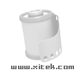

Kodak Ektachrome 160T Prof. 彩色正片，灯光片。适用于影室，产品以及舞台摄影。
专业的灯光片，别有风味。 同样是买了过期的尝试一下不同的感觉。
做工精良，专业风范； 颜色经过校正以后，非常正。
用途还是窄一些； 与此对应的性价比就很低了。
因为帮别人拍东西偶然用了一次，两卷；市价卖78，一般人舍不得试用，本人只是些皮毛感受，仅供摄友参考。
在ARRI钨丝灯下拍摄色彩还原准确，饱和度高且真实自然，成像清晰锐利；很有柯达专业片的水准。
很可能是当时冲洗有问题，完成片颗粒很大，完全不符合160片应有的颗粒，看上去倒象400的颗粒。听别人说颗粒不应该这样大。